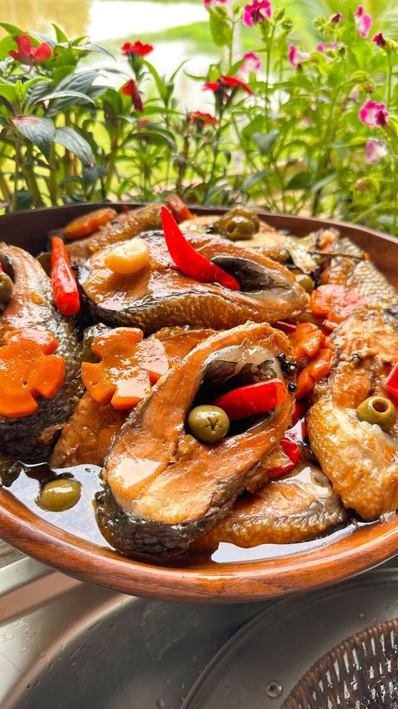
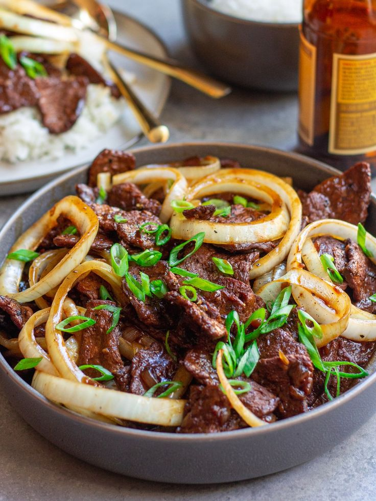
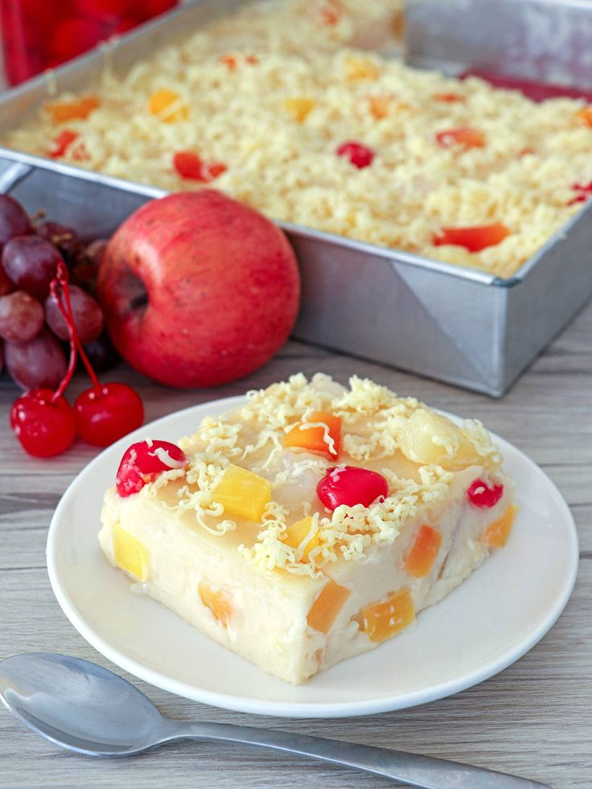

Discover your favorite recipes
Unlock access to exclusive recipes with our premium subscription
Featured Recipes

Spanish-Style Sardines Bangus in Oil
A Filipino dish featuring bangus (milkfish) slow-cooked in oil with garlic, onions, bay leaves, carrots, and chili peppers.

Bistek
A Filipino dish made with thinly sliced beef, marinated in soy sauce and calamansi (Filipino lime) juice, then pan-fried and simmered with onions.

Maja Jubilee
A Filipino coconut pudding made with coconut milk, cornstarch, and sugar, enhanced with a mix of colorful fruits like corn and pineapple, along with bits of red and green jelly for a festive appearance and fruity flavor.
Don't have an account? Create one!